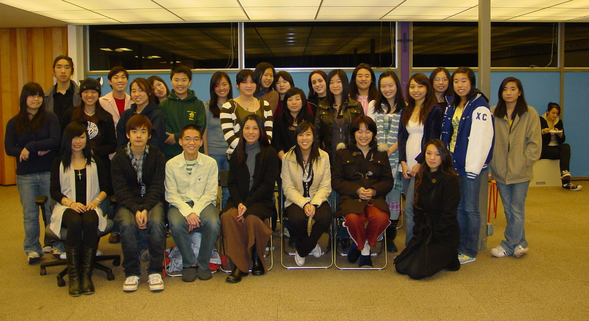

莎伦画院学生感恩作品论谈会
11月24日莎伦画院部分正在大学主修设计的学生数十人回新州总校，展示他们最近在大学的部分创作作品，相互切磋技艺，并接受刘莎伦老师的点评指导。学生离开莎伦画院后在全美最顶尖的美术设计学院――罗德岛设计学院等名校，分别主修建筑、城市规划、室内、珠宝、服装、平面、电脑动漫、工业等设计。此次有些学生回新州与家人团聚，有学生因家住西岸或国外，无法回乡，故来到新州与刘老师过感恩节。

刘老师与学生感情极深厚，很多学生长大成人后，刘老师依然步步关心他们的成长，包括在大学的学习情况，学习、生活、工作中遇到的问题，心理、情绪、信仰及与父母的关係，以及选择工作及打工的工作寻找及辅导训练……在这些方面付出了相当多的心力。“我以前没有遇到什麽“贵人”，每一步都靠自己摸索出来，所以希望自己的学生得到正确的引导，少走弯路。”刘莎伦这样认为。“学生不仅有最顶尖大学学历、最扎实深厚的基础……还要具有领袖才能极过人的观察、判断、决策、统筹能力，最终才能成为最顶尖的设计界领导者。
这些昔日的学生有些已成为兼职设计师、大学助教、老师……但对刘老师依然非常尊重，并互相交流学习、功课、学业上的种种经历，学生们表示罗德岛及巴赛迪那的设计中心学院不愧是全美及全球最顶尖的设计学院，新生被录取就收到教授传来大量作业，在校期间，每週几百张作品要完成，每天作画十数小时，几乎每个学生都连续熬夜赶功课，甚至有人昏倒在课堂上，称得上是“魔鬼“训练。好在他们在莎伦画院打下了坚固的基础。学生们虽然觉得压力及劳累，但能够进入众人梦寐以求的学院，得到最好的训练，并加强他们的快速反映能力和超人的耐心、意志力，认为所有付出都值得，心情都很快乐。所有学生进入第2年后都适应了学校生活。
刘莎伦希望学生们有上帝作依靠，胜过人生路上种种试探、困难、危险……“以前孩子与家长有困难都会来找我，他们说，刘老师一定会有办法，他们不知道因为我有上帝当依靠，孩子们上大学后，我照顾不到他们了，所以希望他们能找到上帝，接受上帝作依靠。”
刘老师肯定学生在大学里都懂事努力多了，学业长进许多，令她欣慰。
论谈点评会后，莎伦画院宴请了这些学生们，度过一个感智性并浓的感恩节。（2009）